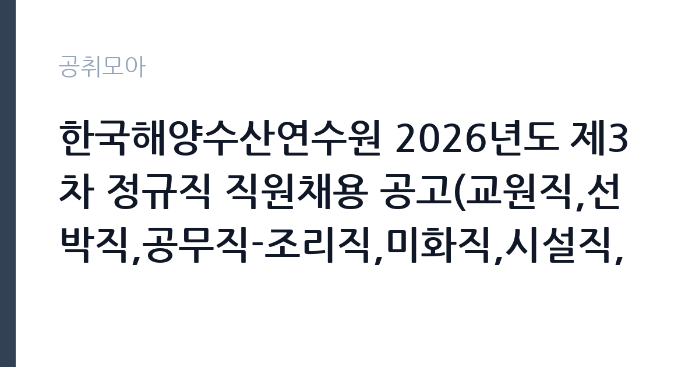

[공공기관] 한국해양수산연수원 2026년도 제3차 정규직 직원채용 공고(교원직,선박직,공무직-조리직,미화직,시설직,승선직)
한국해양수산연수원 · 전남 · 마감 2026-11-09 (D-14) · 출처 나라일터

한눈에 보는 모집 조건
| 기관 | 한국해양수산연수원 |
|---|---|
| 공고명 | 한국해양수산연수원 2026년도 제3차 정규직 직원채용 공고(교원직,선박직,공무직-조리직,미화직,시설직,승선직) |
| 고용형태 | 공무직 |
| 근무지 | 전남 |
| 게시일 | 2026-10-26 |
| 마감일 | 2026-11-09 (D-14) |
지원자격, 이렇게 읽으세요
- 교원직(전임강사이상교원, 교관직) 5명 선박직 5명 공무직(조리직) 5명
- 접수 ~2026-11-09 마감
- 세부 조건은 원문 공고문 확인
공무직 근로자는 공무원이 아니라 근로기준법이 적용되는 근로자이지만 기간의 정함이 없는 무기계약으로 채용되는 경우가 많아 정년까지 근무가 가능합니다. 채용은 공무원 시험과 달리 기관의 자체 전형으로 진행되고 인사 규정과 임금표를 적용받습니다. 이번 공고는 한국해양수산연수원가 직접 진행하는 자체 전형입니다. 미화 직무는 학력과 경력을 엄격하게 보지 않는 대신, 실제 근무 가능성과 건강 상태를 확인합니다. 무거운 장비를 들고 계단과 화장실을 오가야 하므로 허리와 무릎 상태가 실질적인 조건입니다. 채용 인원이 1명인 경우가 많아 경쟁이 몰릴 수 있고, 근무지 거주자나 관련 경력자를 우대하는 조항이 붙기도 합니다. 접수 방식이 우편이나 방문인 경우가 있어 온라인 접수만 생각하면 일정을 놓칩니다. 국가공무원법상 결격사유 확인 절차가 있습니다. 응시 자격 판단이 애매하면 접수 전에 채용 담당 부서로 문의하는 편이 안전합니다. 자격 취득 예정자는 채용 공고의 예정자 허용 조항을 먼저 확인해야 합니다. 조항이 없으면 지원 자체가 반려될 수 있습니다. 우대 사항에 해당하면 증빙을 반드시 첨부해야 하며, 누락하면 가점 없이 평가됩니다.
이 공고의 포인트
이 건은 한국해양수산연수원가 같은 시기에 낸 2개 모집분야 가운데 시설 미화 직무입니다. 다른 직무 공고와 요건이 다르므로 지원 전에 모집분야 표를 대조해야 합니다. 이 공고의 첫 번째 포인트는 고용 형태입니다. 무기계약으로 채용되면 정년까지 근무가 가능해 재계약 부담이 없습니다. 반대로 기간제로 채용되는 공고라면 계약 기간을 먼저 확인해야 합니다. 두 번째는 업무 범위가 명확하다는 점입니다. 시설 미화 직무로 채용되므로 배치 이후 담당 업무가 크게 흔들리지 않습니다. 세 번째는 근무지입니다. 전남 지역 근무로 수도권 공고에 비해 지원자 분포가 넓지 않아 상대적으로 경쟁이 분산되는 경우가 있습니다. 재공고로 올라온 공고라 이전 차수 지원자와의 형평성 기준을 확인할 필요가 있습니다. 같은 직무로 함께 올라온 공고 3건 가운데 마감이 중간에 위치하므로 다른 공고와 일정이 겹치는지 확인하십시오. 다만 선발 인원이 5명으로 많지 않아 자격을 갖춘 지원자가 몰리면 경쟁률이 높아질 수 있습니다.
전형은 어떻게 진행되나
1차 서류, 2차 면접의 2단계로 진행되는 구성이 일반적입니다. 서류에서는 자격 요건과 경력 증빙을 확인하고, 면접에서는 실제 업무 수행 능력과 조직 적응을 봅니다. 직무에 따라 필기시험이나 실기, 컴퓨터 활용 시험이 추가되기도 하므로 공고문의 전형표를 먼저 확인하십시오. 단계별로 합격자만 다음 전형에 응시할 수 있고, 단계마다 응시 자격 확인 서류를 다시 제출해야 하는 경우가 있습니다. 최종합격자 발표 후에는 신원조회와 채용 신체검사가 남아 있습니다. 면접조 편성과 대기 시간이 공지되므로 당일 도착 시간을 여유 있게 잡으십시오.
원문에서 확인한 전형 방식
○채용분야 - 전임강사 이상 교원직(항해) 1명 - 전임강사 이상 교원직(통신) 1명 - 교관직(어선항해-승선교육·행정-어선실습선) 1명 - 교관직(안전교육-구명,소화-목포) 2명 - 선박직(항해사관-어선실습선)1명 - 선박직(갑판장-어선실습선) 1명 - 선박직(감독 또는 기관사) 3명 - 무기계약직(공무직)-조리직(조리사 1명, 조리원 4명_영도2명, 용당1명, 보훈대상자 1명) -무기계약직(공무직)-승선직(갑판부원) 1명, (기관부원)1명, (조리부원)3명 *어선실습선 -무기계약직(공무직)-승선직(갑판부원) 1명, (조리부원)3명 *상선실습선 ○ 고용형태 : 정규직 ○ 채용기간 : 연수원 인사규정 제31조 정년기간 ○ 선발방법 : 공개채용 □ 제1단계(서류심사) - (적/부 심사) 서류심사 결과 지원자격 적격자 전원 □ 제2단계(필기전형) 인성 및 직무능력검사 ○ 전임강사 이상 교원, 교관직, 선박직, 행정직, 일반사무직 : 인성검사, NCS직업기초능력검사 ○ 공무직 : 인성검사, 적성검사 - 직무능력검사 고득점자순으로 채용 예정인원의 5배수 이내에서 3단계 대상자 결정 (만점의 40% 미만인 경우 3단계 대상에서 제외, 단, 공무직은 과락기준 없음) □
이런 분께 추천해요
- 장기간 성실하게 근무할 수 있는 분
- 신체 활동에 무리가 없는 분
- 출퇴근 시간을 정확히 지킬 수 있는 분
지원 전 체크리스트
- 응시자격 요건과 경력 기준을 충족하는가 — 경력은 증명서로 입증해야 합니다
- 무기계약 여부와 정년 기준을 공고문에서 확인했는가
- 제출서류 목록을 모두 준비했는가 — 누락 시 서류 단계에서 탈락합니다
- 접수 마감 2026-11-09 이전에 접수 방식을 확인해 제출했는가
모집 일정과 제출 타이밍
2026-10-26에 공고가 올라왔고 접수는 2026-11-09까지입니다. 남은 기간은 14일이며, 이 기간에 자격증 사본과 경력증명서, 주민등록등본 같은 기본 서류를 모두 준비해야 합니다. 경력증명서는 발급에 며칠이 걸리는 경우가 있으니 가장 먼저 신청하십시오. 접수는 온라인과 우편·방문으로 나뉘는 경우가 많고, 우편 접수는 도착 기준으로 판정되므로 마감일 소인만 믿으면 안 됩니다. 면접 일정은 서류 발표 후 개별 통보되므로 제출 후에도 연락을 받을 수 있도록 유지해야 합니다. 제출 서류는 공고문에 적힌 순서대로 정리하면 담당자가 확인하기 쉬워 누락이 줄어듭니다.
직무 이해하기: 공공기관
교육기관은 학교 교육과 교원 연수, 교육 행정을 담당합니다. 교육청은 관내 학교를 지원하고, 대학은 학사와 연구, 학생 지원 업무를 운영합니다. 예산과 인사 규정이 교육부 지침과 자체 규정을 함께 따르므로 절차가 엄격합니다. 미화 업무는 건물 내부와 외부의 청결을 유지하는 일입니다. 사무실과 화장실, 복도, 계단을 정해진 순서와 주기로 청소하고, 쓰레기를 분리해 지정된 장소로 옮깁니다. 행사나 회의가 있는 날에는 사전 정리와 사후 청소가 추가됩니다. 바닥 왁싱이나 유리창 청소처럼 장비를 쓰는 작업도 포함되며, 세제와 소독제 사용법을 지켜야 합니다. 근무 시간이 이른 아침이나 저녁으로 정해지는 경우가 많습니다. 이 직무는 담당 구역이 정해져 있어 근무지에 따라 실제 업무 환경이 달라집니다. 업무 매뉴얼과 지침이 문서로 정리되어 있어 절차를 익히면 반복 업무는 빠르게 손에 붙습니다. 이 건의 근무 대상 지역·부서는 원문 기준 '교원직,선박직,공무직-조리직,미화직,시설직,승선직'입니다 원문에 '공개채용 □ 제1단계(서류심사) - (적/부 심사) 서류심사 결과 지원자격 적격자 전원 □ 제2단계(필기전형) 인성 및 직무능력검사 ○ 전임강사 이상 교원, 교관직'라는 조건이 명시되어 있습니다.
자기소개서 작성 팁
미화 지원서는 거창한 표현보다 구체적인 생활 경험이 효과적입니다. 가정이나 이전 직장에서 청결을 유지한 경험, 시설 관리나 봉사 활동 경험을 적으십시오. 장기 근무 의사와 출퇴근 가능성을 분명히 쓰고, 체력 유지 방법을 한 줄 덧붙이면 신뢰를 줍니다. 지원 동기는 안정적인 고용과 성실한 근로라는 두 축으로 정리하면 좋습니다. 직무 경험이 많지 않다면 경험의 양보다 과정을 구체적으로 쓰는 편이 낫습니다. 어떤 상황에서 무엇을 판단했고 어떤 결과가 나왔는지 순서대로 서술하면 신뢰가 생깁니다. 지원 동기와 기여 방안은 한 문단씩 짧게 유지하고, 가장 자신 있는 경험에 분량을 몰아주십시오. 마지막 문장은 포부보다 구체적인 실행 계획으로 끝내는 것이 좋습니다.
면접 준비 포인트
면접에서는 성실성과 근무 지속 의사를 확인합니다. 힘든 업무를 오래 할 수 있는지, 지저분한 작업을 꺼리지 않는지, 함께 일하는 사람과 어떻게 협력하는지를 묻습니다. 청소 순서와 안전 수칙을 알고 있는지도 평가 요소입니다. 결근 없이 근무할 수 있는지, 출퇴근 시간을 지킬 수 있는지가 실질적인 판단 기준입니다. 마지막 질문 시간에는 근무 조건에 대한 확인 사항을 한 가지 정도 준비해 가면 성실성이 드러납니다. 지원 기관의 최근 사업이나 조직 개편 내용을 확인해 두면 지원 동기 질문에서 차이가 납니다.
급여·근무조건 읽는 법
알리오(공공기관 경영정보 공개시스템) 2025년 결산 경영공시 기준으로 한국해양수산연수원 일반정규직 1인당 평균보수액은 5,989만원, 공시된 신입사원 초임은 2,826만원입니다. 무기계약직 1인당 평균보수액은 2,896만원으로 공시되어 정규직과 차이가 납니다. 평균보수액은 기본급에 고정수당·실적수당·성과상여금·급여성 복리후생비를 모두 합산한 값이라 월 기본급만 보고 판단하면 실제와 크게 어긋납니다. 공무직(무기계약)으로 채용되면 정년까지 근무가 가능해 위 무기계약직 평균보수에 가깝게 형성됩니다. 미화 직무의 보수는 기관의 무기계약직 또는 공무직 임금표를 따르며, 기본급에 정액급식비·명절휴가비·복지포인트 등이 더해지는 구조입니다. 무기계약 신분이면 정년까지 근무가 가능하고 매년 임금이 조정됩니다.구체적인 금액과 수당 항목은 공고문 보수표에 있으니 원문에서 확인해야 합니다. 기간제로 채용되는 경우 계약 기간과 재계약 조건을 함께 확인하십시오. 2026년 적용 최저임금은 시급 10,320원, 월 환산 2,156,880원(주 40시간·209시간 기준)입니다. 고용노동부 고시 제2025-47호로 확정된 금액입니다. 공고문에 금액이 제시되지 않은 항목은 원문 보수표나 처우 설명에서 확인해야 하며 확인되지 않은 수치는 쓰지 않는 것이 원칙입니다. 비교할 때는 월 급여뿐 아니라 상여·명절휴가비·복지포인트·초과근무수당까지 포함한 연간 총액으로 계산하십시오. 기간제라면 계약 기간 동안의 총액을, 무기계약이라면 호봉 상승과 정년까지의 누적 소득을 기준으로 판단하는 편이 정확합니다.
자주 묻는 질문
- 선발 인원은 몇 명인가요?
공고문 기준 5명입니다. 직종별로 인원이 나뉘는 경우가 있으니 모집분야 항목을 함께 확인하십시오. - 근무지는 어디인가요?
전남 지역의 한국해양수산연수원 소속 근무지입니다. 세부 주소와 출퇴근 조건은 원문 공고문에서 확인할 수 있습니다. - 보수는 얼마인가요?
채용 신분(공무직)과 기관 임금 규정에 따라 정해지며 구체적인 금액은 공고문 처우 항목에 제시됩니다. 금액이 공개되지 않은 경우에는 원문의 보수표를 확인하십시오.
함께 보면 좋은 공고
[공공기관] 한국도로공사 대전충남본부 관내 지사(천안, 대전, 영동, 당진, 공주, 부여) 제설 기간제근로자(정비원) 채용 — 마감 2026-11-03[공공기관] 한국도로공사 대전충남본부 관내 지사(천안, 대전, 영동, 당진, 공주, 부여) 제설 기간제근로자(운전원) 채용 — 마감 2026-11-03[공공기관] 한국도로공사 대전충남본부 관내 지사(천안, 대전, 영동, 당진, 공주, 부여) 제설 기간제근로자(도로관리원) 채용 — 마감 2026-11-03출처: 나라일터 공개정보를 바탕으로 공취모아가 정리한 안내글입니다. 모집 조건·일정은 변경될 수 있으니 지원 전 반드시 원문 공고문을 확인하세요. 본 글은 정보 제공용이며 합격을 보장하지 않습니다.